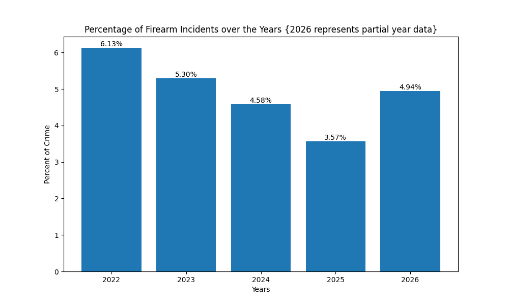

Context
Two Things Changed in 2022
In April 2022, Georgia enacted constitutional carry. The argument behind it was simple: lawbreakers do not follow the law, so why burden law-abiding citizens with what critics called a gun owner tax. From that point forward, any Georgian legally allowed to own a firearm could carry it without a permit.
At roughly the same time, Andre Dickens became Mayor of Atlanta. He came in with a thin resume on public safety and a city that had been watching its crime numbers with concern. The two events arriving together created a natural question. What happened next?
This analysis uses four years of Atlanta Police Department incident data to look at that question without a predetermined answer. No political framing. No advocacy. Just the numbers and what they say, and what they do not say.
Data and Methodology
The raw dataset contained 220,581 incident records across 29 columns pulled from the Atlanta PD Open Data Portal. The data was profiled, cleaned, and loaded into a SQLite database. Five columns were retained for analysis: incident ID, report date, firearm involvement flag, NIBRS offense code, and NIBRS offense description.
Records were filtered to the analytical window of April 1, 2022 through March 31, 2026. Five records with physically impossible dates were removed along with six null date entries and records falling outside the window. The final working dataset contained 219,787 records.
Three business questions were asked before any data was explored. Firearm involvement rate by year. Firearm-involved homicide trend by year. And the overall trajectory of firearm violence across the four-year period.
Finding 01
The Rate Is Falling. The Story Is More Complicated.
6.13%
Firearm Rate 2022
3.57%
Firearm Rate 2025
~2,400
Avg Annual Firearm Incidents
70%
Total Crime Increase
On the surface, the percentage of crimes involving a firearm dropped from 6.13% in 2022 to 3.57% in 2025. That looks like progress. But the raw numbers behind that percentage tell a different story.
Firearm-involved incidents did not fall dramatically. They held relatively flat, ranging between roughly 2,300 and 2,600 incidents each year. What changed was the denominator. Total crime in Atlanta went from approximately 38,000 incidents in 2022 to over 65,000 in 2025. The rate dropped because everything else grew around it.
The rate of firearm involvement fell not because firearm crime got better, but because overall crime got significantly worse.
Figure 01 — Annual Firearm Involvement Rate

2026 represents partial year data (Q1 only). Rate shown as percent of total annual incidents.
Finding 02 — The Anomaly
2023 Does Not Fit the Line
Of the four full years in this dataset, 2023 stands out. It produced the highest homicide count of any year in the window, 131, and it coincided with the highest raw count of firearm-involved incidents across the period.
Analyst Note
One plausible explanation for the 2023 spike is the influx of firearms into circulation following the legalization of constitutional carry. The novelty effect of unrestricted carry may have contributed to a temporary increase in firearm-related incidents before behavior normalized. This is a hypothesis, not a finding. The data does not allow for causal conclusions.
What the data does show is that 2023 was an outlier. By 2024, homicide counts had returned to 2022 levels and continued declining into 2025. Whether 2023 represents a systemic shift that was then corrected, or simply a year with unusual circumstances, cannot be determined from incident records alone.
Figure 02 — Annual Homicide Count

Homicides defined as NIBRS code 09A (Murder and Non-negligent Manslaughter). 2026 represents Q1 only.
Finding 03 — The Full Picture
The Overall Trajectory
When you put both trends on the same chart, the story becomes harder to ignore. Total crime climbed steadily across all four years. Homicides peaked in 2023 and declined through 2025, with the trajectory continuing into the partial 2026 data.
Homicides fell approximately 30% from their 2023 peak to 2025. That is a real reduction in violent deaths. But over that same stretch, the city absorbed nearly 27,000 additional crime incidents per year compared to 2022. The homicide decline did not happen in a quieter city. It happened in a city that was getting louder in almost every other respect.
Figure 03 — Total Crime vs. Homicide Trend (Dual Axis)

Left axis: total crime incidents. Right axis: homicide count. 2026 represents Q1 only.
Summary Finding
Since 2022, crime in Atlanta increased by approximately 70%. Firearm violence and firearm-related deaths declined only slightly. The data raises more questions than it answers.
Limitations
What This Analysis Cannot Tell You
Honest analysis acknowledges its blind spots. There are three worth naming here.
Firearms in Circulation
This analysis has no visibility into how many firearms entered circulation after constitutional carry took effect. That number would be central to understanding whether increased gun ownership correlated with any change in firearm crime. That data does not exist in this dataset.
Concurrent Policy Factors
The Dickens administration implemented multiple public safety initiatives over this period. Court backlogs, policing strategy changes, and economic conditions all influence crime numbers. This analysis cannot isolate the effect of any single factor, constitutional carry included.
APD Records vs. FBI Records
The Atlanta PD Open Data Portal figures used here do not always match official FBI crime statistics. The FBI removes and reclassifies certain incidents during its reporting process. Readers who compare these findings to federal data may find discrepancies. The APD figures are used here because they are the most granular and most current source available for this window.